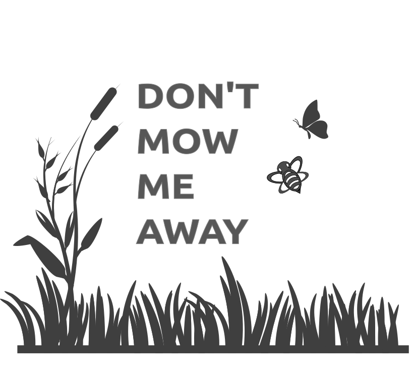

Don't Mow Me Away is a Dutch initiative that aims to increase biodiversity, save the bees and reduce periods of drought with one simple advice: stop mowing your grass. Research has shown that unmowed grass helps create a diversity of animals and plants, and holds our ground water better. That helps minimize the impact of periods of drought.
Because we believe in working effectively with maximal impact, we focus our attention not just on individuals, but rather on larger players, such as companies and government institutions. Those often maintain large stretches of grass, after all, for example around buildings or alongside roads. We send letters to these organizations about the benefits of unmowed grass, and encourage other people to do the same. To help then, we have a toolkit with materials that can be used to convince organizations.
Do you want to help? Check our toolkit below!
Do you want to help us? Here are some things you can do:
The following links lead to our tools. Tools that you can use to convince others to stop mowing their grass.